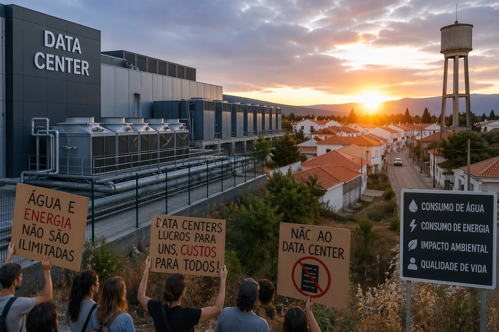

De infraestrutura discreta a alvo político
Durante mais de uma década, os data centers foram tratados pelos governos ocidentais como infraestrutura neutra. Eram caixas cinzentas em parques industriais, geradoras de emprego qualificado, anunciadas com cortes de fita. A narrativa era simples. A nuvem é o futuro, o futuro precisa de ferro, e o ferro precisa de terreno barato e eletricidade abundante.
Essa era acabou. A Reuters publicou em meados de Abril um relatório detalhado sobre o recuo público e financeiro contra os três maiores operadores mundiais. Amazon Web Services, Microsoft Azure e Google Cloud, os chamados hyperscalers, estão agora a enfrentar resistência organizada em praticamente todas as geografias onde pretendem expandir. Há projectos cancelados no Arizona, moratórias aprovadas em Dublin, processos judiciais no Chile, manifestações semanais na Virgínia, e pela primeira vez fundos de investimento institucionais a exigir divulgação obrigatória do consumo hídrico e energético destas instalações.
Não é uma crise. É uma inflexão.
A escala já não cabe discretamente
O que mudou foi a grandeza. Um data center de 2015 consumia aquilo que uma fábrica pesada consome. Um data center optimizado para treino de modelos de inteligência artificial, em 2026, consome aquilo que uma pequena cidade consome. E a procura continua a duplicar a cada dezoito meses.
Para contexto, 945 TWh é mais do que o consumo anual total do Japão. E não é uma previsão de cauda longa. É o cenário central da Agência Internacional de Energia. O bullish case, com adopção intensiva de IA generativa em todos os sectores, passa dos 1.200 TWh.
Na água, o problema é geograficamente concreto. Os data centers precisam de arrefecimento, e o arrefecimento mais eficiente é feito com evaporação. No deserto do Arizona, num único cluster de servidores da Google, foram consumidos mais de quatro mil milhões de litros em 2024. A cidade de Chandler, onde o cluster se situa, entrou em restrição severa de abastecimento no mesmo ano. Os residentes descobriram as duas coisas em simultâneo.
Onde os projectos estão a cair
A lista cresceu rapidamente nos últimos doze meses. Vale a pena olhar para cada caso, porque o padrão é mais revelador do que cada episódio isolado.
| Local | Operador | Estado | Razão dominante |
|---|---|---|---|
| Dublin | Vários hyperscalers | Moratória de novas ligações à rede | 20 por cento do consumo eléctrico nacional |
| Arizona (Chandler) | Expansão adiada sine die | Conflito com restrição hídrica municipal | |
| Virgínia (Loudoun County) | AWS | Três projectos cancelados em 2025 | Oposição comunitária e nova tarifa eléctrica |
| Chile (Santiago) | Projecto bloqueado por decisão judicial | Estudo de impacto hídrico considerado insuficiente | |
| Países Baixos | Microsoft, Meta | Moratória nacional prolongada | Uso do solo em zona agrícola protegida |
| Aragón (Espanha) | Amazon | Contestação pública em curso | Consumo hídrico em região de seca estrutural |
Nenhum destes casos tem a mesma causa imediata. Em Dublin é a rede eléctrica. No Arizona é a água. Em Loudoun é uma combinação de impacto visual e custo energético repassado aos residentes. Mas a causa profunda é única. A externalidade, durante anos absorvida localmente em troca de emprego e receita fiscal, deixou de ser tolerada porque a escala agregada tornou-se ingerível.
Os investidores entraram na equação
Até 2024, a pressão era essencialmente comunitária. Câmaras municipais, associações de residentes, organizações ambientais. O que mudou em 2025 foi a entrada dos maiores accionistas institucionais nesta discussão. Fundos soberanos, gestoras de pensões e alguns dos maiores detentores de equity tecnológica global começaram a pedir, primeiro em cartas privadas e depois em resoluções públicas de assembleia, reporte obrigatório de consumo hídrico e intensidade de carbono por data center.
Na última assembleia geral da Amazon, uma resolução nesse sentido reuniu 23 por cento dos votos. Não passou, mas duplicou face ao ano anterior. Na Microsoft foi parecido. Na Alphabet a discussão já está incorporada no reporte ESG de forma voluntária, embora sem granularidade comparável à que é exigida, por exemplo, à indústria química.
O sinal é inequívoco. Quando os próprios accionistas começam a querer saber quanto custa fisicamente o crescimento que financiam, a equação passa a ser outra. Não é um momento reputacional. É o início de um pricing da externalidade.
Portugal, Irlanda e a tentação do hub digital
A Europa oferece dois casos ilustrativos quase opostos. A Irlanda, que durante uma década se posicionou agressivamente como hub de data centers através de fiscalidade atractiva e ligações transatlânticas, atingiu o ponto em que um quinto da electricidade nacional é consumida por estas instalações. A resposta foi uma moratória de facto imposta pela EirGrid. Novos pedidos de ligação à rede em Dublin deixaram de ser aceites até haver capacidade adicional construída, e essa capacidade adicional é lenta porque depende de transmissão de alta tensão que leva anos a planear.
Portugal está noutro momento. As instalações existem, mas a escala agregada ainda é pequena. Há anúncios regulares de novos projectos, em particular em Sines, onde a combinação de cabo submarino, energia renovável disponível e terreno industrial faz sentido técnico. Há também uma disputa política sobre que condições devem ser exigidas aos operadores. Consumo hídrico máximo, contratos de longo prazo com renováveis dedicadas, retorno fiscal por megawatt, obrigações de interligação com calor residual.
A questão não é se Portugal deve ou não acolher data centers. Essa batalha está ganha pela infraestrutura já instalada. A questão é em que termos. E aqui a experiência irlandesa é instrutiva. Quando se capta a rapidez e se adia a exigência, o custo acaba pago pelo território, e a correcção posterior é sempre mais dura do que a exigência inicial teria sido.
Porquê agora, e por que não antes
Os data centers existem há décadas sem provocar este nível de atrito. Três factores convergiram em 2024 e 2025 para transformar um tema técnico num tema político.
O primeiro é a inteligência artificial generativa. O treino de um modelo de fronteira consome, por si só, mais electricidade do que uma pequena indústria durante um ano. A inferência, que é a utilização quotidiana por biliões de utilizadores, é onde se concentra o consumo real, e esse consumo multiplicou-se por seis entre 2022 e 2026. A curva de procura deixou de ser linear.
O segundo é a pressão climática e regulatória na Europa. A directiva de eficiência energética revista em 2023 obriga operadores acima de 500 kW a reportar consumo e PUE (power usage effectiveness). A revisão de 2025 estende-se à água e à origem da electricidade. Pela primeira vez há dados comparáveis, e com dados comparáveis nasce o escrutínio.
O terceiro é o ciclo de juros. Entre 2020 e 2022, com o custo de capital próximo de zero, os hyperscalers expandiram-se com capex agressivo e sem ter de justificar granularmente cada projecto. Em 2026, com taxas ainda elevadas e margens sob pressão, os comités de investimento exigem retorno por megawatt, e os projectos mais polémicos são precisamente aqueles em que o retorno não compensa o risco político.
Estes três vectores não actuam em paralelo. Reforçam-se. Mais IA significa mais consumo, mais consumo significa mais escrutínio, mais escrutínio significa mais custo, mais custo obriga a disciplinar capex. O ciclo que durante anos foi expansionista tornou-se correctivo.
O que muda para quem depende de nuvem e IA
É tentador ler esta história como uma narrativa entre hyperscalers e ambientalistas. Não é. O efeito prático passa para quem compra serviços a estes operadores. Ou seja, essencialmente para toda a empresa média europeia que utiliza AWS, Azure ou Google Cloud.
Preços de nuvem em alta estrutural
O primeiro efeito já está a ser sentido. Entre Janeiro de 2025 e Março de 2026, os preços listados de instâncias de GPU dedicadas à IA subiram entre 15 e 28 por cento consoante a região. Parte disto é escassez de hardware. Parte é repasse de custo eléctrico. Parte é prémio de risco regulatório. O que até há dois anos era tratado como commodity com tendência deflacionária entrou num regime diferente. As empresas que assumiram, nos seus business plans, continuação da queda de custos de computação estão a ter de refazer contas.
Concentração geográfica crescente
Onde a licença se torna difícil, os operadores não desistem. Redireccionam. Os investimentos estão a ser concentrados em geografias específicas, tipicamente com electricidade barata e recebimento político favorável. Estado do Iowa, Finlândia, Islândia, algumas regiões nórdicas. Isto tem uma consequência operacional que é raramente discutida. A latência e a soberania do dado ficam cada vez mais definidas pela geografia de infraestrutura disponível, e não pela preferência do cliente. Para empresas europeias que precisem de residência de dados em território nacional, isto pode começar a ser uma restrição real.
Auditoria ambiental descendo a cadeia de fornecimento
A partir de 2026, várias jurisdições europeias, incluindo a CSRD portuguesa em vigor para empresas de maior dimensão, vão obrigar ao reporte de emissões scope 3. Dentro do scope 3 encontra-se o consumo de cloud computing. Uma empresa que use intensivamente IA generativa começa a ter emissões imputadas significativas. Mesmo sem obrigação de reporte próprio, clientes empresariais de dimensão começarão a perguntar. Já estão a perguntar, na maioria dos tenders acima de certa escala.
Contratos long-term e power purchase agreements
Pela primeira vez, os hyperscalers estão a oferecer contratos de nuvem a dez anos com cláusula de indexação a energia renovável dedicada. O que era um modelo de subscrição flexível está a evoluir para um modelo parecido com utilities. Para CFOs isto tem leitura dupla. Por um lado, previsibilidade de custo. Por outro, dependência contratual longa a um operador específico. A negociação destes contratos vai ser uma competência nova dentro de departamentos financeiros.
Quatro decisões que fazem sentido agora
O ponto não é entrar em pânico. É reconhecer que uma variável que a maior parte dos planos de negócio tratava como estável deixou de o ser. Algumas decisões concretas, que podem ser tomadas nos próximos doze meses, reduzem exposição e abrem optionalidade.
- Medir custo unitário de computação real. A maior parte das empresas não sabe quanto gasta por unidade de output digital. Sem essa métrica é impossível detectar derivas.
- Distinguir cargas críticas de cargas elásticas. Nem toda a computação é igual. Cargas elásticas podem ser renegociadas, diferidas, regionalizadas. Cargas críticas não. Um inventário claro permite contratos diferenciados.
- Negociar cláusulas de soberania e residência de dados. Enquanto a concentração geográfica aumenta, a janela para exigir localização específica sem pagar prémio está a fechar-se. Aproveitar o momento presente é racional.
- Integrar consumo digital no reporte ESG. Não é antecipar regulação apenas. É defender a empresa contra perguntas de clientes, auditores e investidores que já estão a ser feitas.
A infraestrutura digital entrou na era política
Durante vinte anos, a tecnologia teve um privilégio invisível. Foi tratada como imaterial, limpa, abstracta. Essa percepção permitiu um ritmo de crescimento que nenhuma outra indústria conseguiu, e escondeu sistematicamente a base física de tudo isto. O backlash que hoje se observa não é ingratidão colectiva. É a recuperação de uma verdade óbvia. A computação é feita de fábricas, com chaminés, com consumos, com impacto territorial. E quando uma actividade de escala industrial é tratada como se não o fosse, mais cedo ou mais tarde a realidade impõe-se.
Para o gestor português que lê isto com alguma distância, a tentação é arrumar o tema como assunto americano ou irlandês. Seria um erro. Portugal vai ter, nos próximos cinco anos, uma decisão estratégica de fundo sobre quantos data centers acolhe, com que contrapartidas e ao serviço de que modelo económico. E vai ter também, como utilizador, uma factura de nuvem que deixou de descer. Estas duas coisas não são coincidência. São o mesmo fenómeno visto de dois ângulos.
A resposta correcta não é nem celebrar o fim da expansão, nem ignorar o ruído e continuar como se nada fosse. É tratar a infraestrutura digital com a mesma seriedade com que se trata a energia, o capital humano ou a logística. Uma linha estratégica do negócio, com custo real, risco real e margem real para optimização. As empresas que fizerem isto nos próximos dois anos vão ter uma vantagem competitiva material sobre as que continuarem a tratar a nuvem como uma caixa preta onde o custo aparece no fim do mês sem ninguém saber bem porquê.
O preço político da infraestrutura digital já é uma realidade. O preço económico está a chegar rapidamente. Quem decidir antes dos concorrentes o que fazer com esta informação decide com mais tempo e com menos atrito.
Comentários, correções ou contrapontos são bem-vindos: geral@opencapital.pt